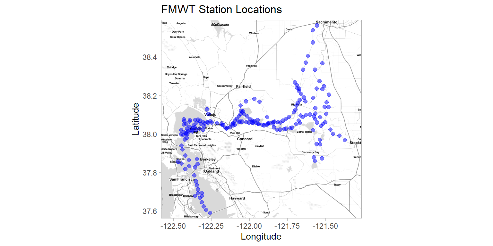
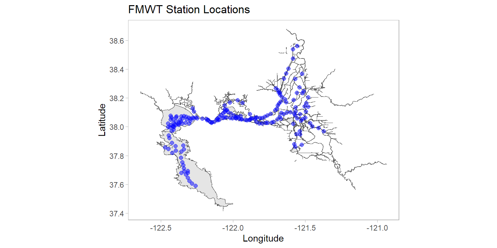

library(tidyverse)
library(data.table)
library(sf)
library(here)
library(devtools)
library(htmltools)
library(ggmap)
library(leaflet)
library(deltamapr) #install first using the command: devtools::install_github("InteragencyEcologicalProgram/deltamapr")
#if you have issues installing this your department's firewall settings can be blocking downloads from github, CDFW has such a policy. Don't worry we'll manually download the same shapefile as well.3 ways to create maps in R
Introduction
Here I’m going to show you how to produce high quality maps ready for publishing in journals, reports, memos, or html pages. They get slightly more difficult as we progress, and I will demonstrate creating the same basic map using all three approaches.
Install the necessary libraries before we get started. Then load them using these commands.
I used to run the Fall Midwater Trawl survey so today we’ll be creating maps just plotting the historical site locations sampled in this survey, using their GPS coordinates. Let’s import that data first.
fmwt <- fread("https://filelib.wildlife.ca.gov/Public/TownetFallMidwaterTrawl/FMWT%20Data/FMWT_Station_Locations.csv") %>%
filter(., !is.na(Latitude)) #remove one station with missing valuesGGMap with GGPlot
The package ggmap dowloads a map from the Google Maps server and then you can overlay points, bubbles, etc. using ggplot. Google Maps are nice, but to use those you need to create a Google Cloud Platform account, and setup an API with a private key to download. See a tutorial here (https://appsilon.com/r-ggmap/) if you want to explore that route. I don’t want to share my private API key and I don’t recommend you do either, so for any circumstances where you’d want to share your R code, I recommend the same package but use another mapping source. I really like stamen maps, you can explore the different types here (http://maps.stamen.com/).
Let’s set a bounding box based on the Latitude & Longitude coordinates from the data we imported earlier and then download a stamen map within these bounds.
#create bounding box for map
deltabox <- make_bbox(lat = Latitude, lon = Longitude, data = fmwt, f = c(.10, .03)) #sets bounding box based on station coordinates, f value adds a buffer around the perimeter
#download background map
stamenmap <- get_stamenmap(deltabox, zoom = 10, maptype = "toner-lite", force = TRUE, crop = TRUE)ℹ Map tiles by Stamen Design, under CC BY 3.0. Data by OpenStreetMap, under ODbL.Now let’s plot the site coordinates over the map with ggplot.
#create scatter plot (using ggplot functions) on top of our map
p <- ggmap(stamenmap) +
geom_point(data = fmwt, mapping = aes(x = Longitude, y = Latitude), color = "blue", size= 2, alpha = 0.5) +
labs(title = "FMWT Station Locations", x = "Longitude", y = "Latitude") +
theme_light() +
theme(panel.grid = element_blank(),
strip.background = element_rect(fill = "black"),
strip.text = element_text(size = 10))
#plot map we just created
p
You can do many types of ggplot functions on top of your ggmap. For instance you could create bubble plots of CPUE. Here’s a tutorial for bubble plots: https://www.data-to-viz.com/graph/bubble.html
SF with GGPlot
The simple features (sf) package works well for handling shapefiles which are basically geographic polygons typically used in Geographic Information System (GIS) applications such as ArcMap or QGIS. The sf package is very robust and can do a lot of GIS tasks within the R environment. So I encourage you to explore it further, it can do a lot more than the simple map we’re making here.
We’re going to do a similar approach to ggmap, load a background map then use ggplot to put points on top of it. Let’s start by loading a background map. First we’ll grab a shapefile from the “Deltamapr” package created by Sam Bashevkin. This is simply a collection of shapefiles conveniently put into an R package. Read more about this package and included shapefiles here (https://github.com/InteragencyEcologicalProgram/deltamapr/).
#create background map
sfmap <- ggplot(WW_Delta) +
geom_sf() +
#add station locations
geom_point(data = fmwt, mapping = aes(x = Longitude, y = Latitude), color = "blue", size= 2, alpha = 0.5) +
labs(title = "FMWT Station Locations", x = "Longitude", y = "Latitude") +
theme_light() +
theme(panel.grid = element_blank(),
strip.background = element_rect(fill = "black"),
strip.text = element_text(size = 10))
#plot map
sfmap
You could also manually load a shapefile if that makes more sense for your use case. First, we’ll download and extract a zip file containing the shapefiles. Then use those shapefiles directly.
download.file("http://www.jamesryanwhite.com/hydro_delta_marsh.zip", destfile = "./hydro_delta_marsh.zip")
unzip(zipfile = "hydro_delta_marsh.zip")sfmap <- read_sf("hydro_delta_marsh.shp") %>%
ggplot(data = .) +
geom_sf() +
#add station locations
geom_point(data = fmwt, mapping = aes(x = Longitude, y = Latitude), color = "blue", size= 2, alpha = 0.5) +
labs(title = "FMWT Station Locations", x = "Longitude", y = "Latitude") +
theme_light() +
theme(panel.grid = element_blank(),
strip.background = element_rect(fill = "black"),
strip.text = element_text(size = 10))
#plot map
sfmap
Sometimes it’s easier to first convert your data into an sf object then plot. Notice the “crs” argument addresses the issue with coordinate reference system which is why the previous plot looks stretched out.
fmwt_sf <- st_as_sf(fmwt, coords = c("Longitude", "Latitude"), crs = 4326)
ggplot() +
geom_sf(data = WW_Delta) +
geom_sf(data = fmwt_sf, color = "blue", size= 2, alpha = 0.5) +
labs(title = "FMWT Station Locations", x = "Longitude", y = "Latitude") +
theme_light() +
theme(panel.grid = element_blank(),
strip.background = element_rect(fill = "black"),
strip.text = element_text(size = 10))
Interactive map with leaflet
The leaflet package is basically a javascript library that integrates well with R. You can use this to create interactive maps where you can scroll, pan, and zoom just like if you were exploring Google maps or Apple maps online. Because of the interactive functionality, this is not useful for static reports or documents, but more for webpages, R Markdown, or R Shiny apps. You can create maps using maptiles (like we did with ggmaps) polygons/shapefiles/sf spatial objects (like we did with sf), or simply lat/long data (like the fmwt data we’re using).
You can also make your map reactive, meaning you can have the map dynamically change based on some sort of filtering (e.g. selections in drop down boxes, etc.). We will not explore that here, but know that this is a powerful package.
#Prepare the text for the tooltip:
mytext <-
paste(
"Station: ", fmwt$Station, "<br/>",
"Station Latitude: ", fmwt$Latitude, "<br/>",
"Station Longitude: ", fmwt$Longitude, "<br/>") %>%
lapply(htmltools::HTML)
#create map
leafmap <- leaflet(fmwt) %>%
addTiles() %>%
setView(lat =38.12, lng= -122, zoom=9) %>% #set center point and zoom level
addProviderTiles("CartoDB.PositronNoLabels") %>% #grab openstreetmap tiles
addCircleMarkers(~Longitude, ~Latitude, #add station points
fillColor = "blue",
fillOpacity = 0.5, color = "white", radius = 5, stroke = FALSE, weight = 1,
label = mytext,
labelOptions = labelOptions( style = list("font-weight" = "normal", padding = "3px 8px"), textsize = "13px", direction = "auto"))
#plot map
leafmapSo hopefully this is pretty straightforward. Obviously, there’s a lot you can do with these packages and an infinite amount of customization possible. Play around with making maps with your data and reach out to me if I can help.